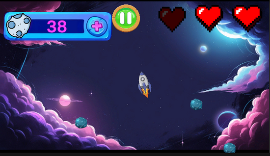
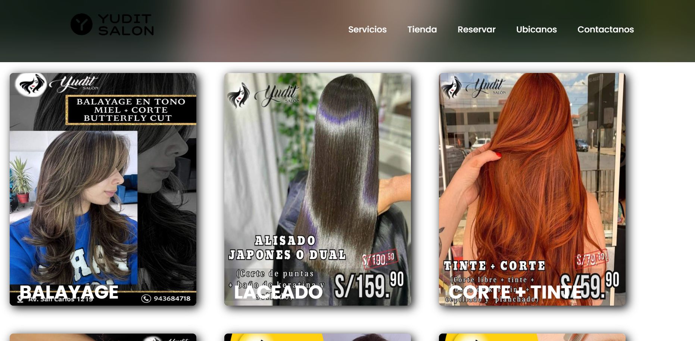

ASTEROID ASSAULT
Asteroid Assault es un juego en 2D desarrollado en Unity para navegadores web. El jugador controla una nave espacial que debe destruir asteroides y sobrevivir el mayor tiempo posible. Con controles simples, puntuación creciente y dificultad progresiva, busca ofrecer una experiencia rápida, entretenida y desafiante.
Ver más

YUDIT SALÓN
Yudit Salón es un sitio web en el que se presentan servicios de cosmetología, cortes, peinados y tratamientos con sus respectivos precios. Incluye navegación intuitiva, secciones interactivas para la programación de citas y un diseño moderno y responsivo que permite a los usuarios explorar el contenido de manera clara y atractiva, optimizando la experiencia del cliente y facilitando la interacción con el salón.
Ver más
